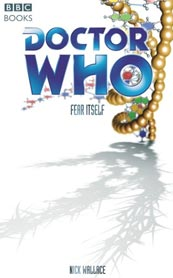

|
Fear Itself
|
BASIC PLOT DOCTOR COMPANIONS MATERIALISATION CIRCUIT PREPARATORY READING CONTINUITY REFERENCES Pg 24 "'Oh God,' Fitz groaned. 'I've heard about your initiative tests.'" The best example is probably Ghost Light. Pg 26 "'Almost thirty years living on Earth,' Fitz said, 'and the best I could manage was a job in a garden centre.'" The Taint. Pgs 27-28 "Wandering into a mezzanine, Fitz had spotted the New Jupiter Cafe; the irony of their last port of call demanded a visit apparently." EarthWorld. Pg 32 Reference to the Earth arc. Pg 33 "The victory had come at a huge personal cost, leaving him and his TARDIS badly damaged. The only solution had been for Fitz to leave his friend and the time ship on Earth to recover, rendezvousing with him later on." The Ancestor Cell, Escape Velocity. Pg 34 "Only a couple of weeks earlier the Doctor had taken a risk to try and get those memories back." EarthWorld. Pgs 39-40 "Michael was Mars-born, so he'd done all the tourist traps: the Paris crater, the New York waterways." The former is likely due to the Martian-propelled asteroid that destroyed Paris in the Thousand Day War, as told in Transit and GodEngine. Pg 42 "But Dave had died soon after she'd met the Doctor, the first severed tie to her old life." Escape Velocity. Pg 63 "The atmosphere on Mars used to be breathable" As we discovered in The Dying Days. "A couple of decades ago there was some sort of invasion. Earth was under alien control, with alien ships blockading Mars. These aliens tried to land on Mars, but got their arses handed to them by some sort of biological weapon. They got their own back; released a virus from orbit that ate through all the oxygen" The Dalek Invasion of Earth, GodEngine. "When I played guitar in the clubs, I had a stage name. I was never Fitz Kreiner. Twenty years after VE day and I was still afraid to use my own name." Almost word for word what Fitz says in The Taint (page 52). Pg 68 "The Doctor handed the violin back. 'The work of a craftsman.' 'You play?' Valletti asked. The Doctor shook his head. 'I did. Until the monks started complaining about the noise.'" Simultaneous forward and backward reference to The Year of Intelligent Tigers. Pg 82 "Something had happened; he had to fight to recall the details now, worried that the events might fade away." Fitz's memories have been slowly disappearing since Escape Velocity (and prefigured at the end of The Ancestor Cell). Pg 90 "Kapoor's suit, like the Professional's, is interwoven with tiny Dortmunium threads" Dortmun was the wheelchair-bound scientist in The Dalek Invasion of Earth (although it may have been invented by his daughter, whom we met in GodEngine). Dortmunium is a nice counterpoint to Dalekanium. Pg 120 "During the occupation, the aliens kept a lot of Earth's population subjugated with neurological implants." The Robomen, The Dalek Invasion of Earth. Pg 134 "Remember the time on Bathesda when I slept right through the entire revolu-" Bathesda appears in Wallace's short story "First Christmas" in Short Trips: A Christmas Treasury. Pg 135 "More than a hundred years and I never felt at home there. From the moment I woke on that train, I didn't need memories to tell me I didn't belong. It took me a long time, decades, to figure out just why that was. To understand. The only hope I had was a note. A promise that if I endured someone would be waiting for me." The Ancestor Cell, The Earth arc. Pg 148 "For a hundred years, he'd passed for one of them." The Earth arc. Pg 149 The Doctor plays the violin, much as he does in The Year of Intelligent Tigers. Pg 176 "'Thousand Day war, maybe?'" He consulted the on-screen menu. 'Ambush in Achebe Gorge?'" Backstory to Transit and GodEngine. "He remembered the first time he'd killed. The man had been trapped in immovable arms, a lunatic whose obsession had caused massive destruction, and the Doctor had aided his demise, kicking him back into raging flood waters." The Burning. Pg 177 "It's what the Zens did when it happened for real" The Zen Brigade was mentioned a lot in Transit. Pg 221 "Fitz caught flashes of familiar images: the blue of a police box; Anji smiling; one of the princesses from Earthworld. Then things he didn't recognise: a blonde teenager; a city consumed by flame; a statue falling into a river." EarthWorld (but see Continuity Cock-Ups; Miranda, Father Time; Dresden, The Turing Test; Nepath's sister, The Burning. Pg 222 "It was cruder than the machine on Earthworld, but the principles remained similar." EarthWorld (but see Continuity Cock-Ups). Pg 238 "When he'd been hurt, he'd felt something pushing through his blood. A chemical release that had finally purged fear from his system. It felt like a precursor to a bigger event, like a caterpillar wrapping itself in a chrysalis. As if some physical change were coming." The Doctor's regenerative abilities, first seen in The Tenth Planet. The Doctor also started to regenerate and stopped in Parasite. Pg 239 "One hundred years ago, he'd woken on a train, the sound of the engine in his ears, smoke and steam in his mouth. He had a name - Doctor - and a note leading him to a rendezvous a century distant, and that was all." The Ancestor Cell, the Earth arc. Pg 265 "Dave Young incinerated by the planet hopper's engines. Running for her life on Earthworld." Escape Velocity, EarthWorld (but see Continuity Cock-Ups). Pg 266 "It's like there's a part of his mind that's walled off." The Doctor's amnesia, which he gained in The Ancestor Cell. We discover the reasons for this wall in The Gallifrey Chronicles. Pg 267 "If he used this equipment could he finish what they started on Earthworld?" EarthWorld (but see Continuity Cock-Ups). Pg 268 "In years to come Anji will be married." To Greg, whom we meet in Timeless and we discover this in The Gallifrey Chronicles. Pg 269 "Dave will have been gone for less than a month." Escape Velocity. Pg 270 "He was signalling a defunct IMC transmitter on Titan." Colony in Space and more New Adventures than you can count. Pg 275 "He remembers the hundred years before, as well. Boarding a space shuttle. The smile on his daughter's face. Alan Turing, unsteady on a bicycle. Another body, falling back into flood waters. The rocking of a railway carriage and soot on his tongue." Father Time, The Turing Test, The Burning, The Ancestor Cell. Pg 276 "He doesn't remember anything from before that railway carriage." The Ancestor Cell. "Next stop the other side of the universe then." This leads right into Vanishing Point. OLD FRIENDS AND OLD ENEMIES NEW FRIENDS AND NEW ENEMIES Other Station personnel include Archer, David Verger, Weir, Carvacchio, Alonso, Garcia, Bluth, Davis, Marcus. Also Anji's husband, Michael, although she won't remember him and the Doctor and Fitz didn't meet him.
CONTINUITY COCK-UPS PLUGGING THE HOLES [Fan-wank theorizing of how to fix continuity cock-ups] FEATURED ALIEN RACES Pg 151 A group of Ice Warriors take Anji and others hostage. Pg 190 All manner of near-dead aliens, placed in stasis shortly before expiring. Pg 258 One of these is a blue-skinned female, with a hint of scales around her cheekbones and green eyes. FEATURED LOCATIONS The action variously occurs: Pg 3 Mars, four years ago. Pgs 6-7 A shuttle near Jupiter, now. Pg 12 Farside Station, now. Pg 17 The PSV Pegasus, four years ago. Pg 39 Mars, three years previously. Pgs 86-87 Mars, two years previously. Pg 123 Mars, c eighteen months previously. Pg 151 Mars, c six months previously. Pg 194 Mars, now. Pg 226 The System Colonies, six months ago. Pg 265 Marineris base, six weeks later. Pg 269 A transport heading to Earth., six weeks later. Pg 272 Florance, Italy six weeks later. IN SUMMARY - Robert Smith? |
|
 |